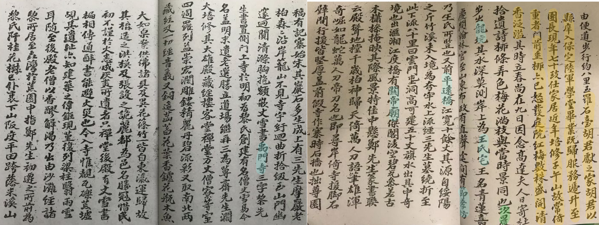
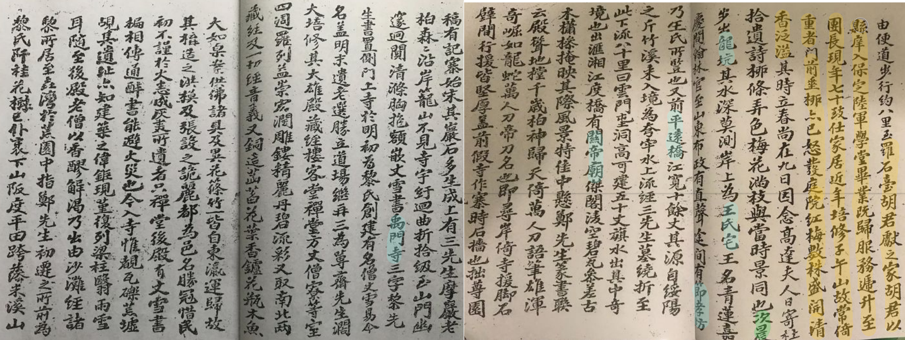
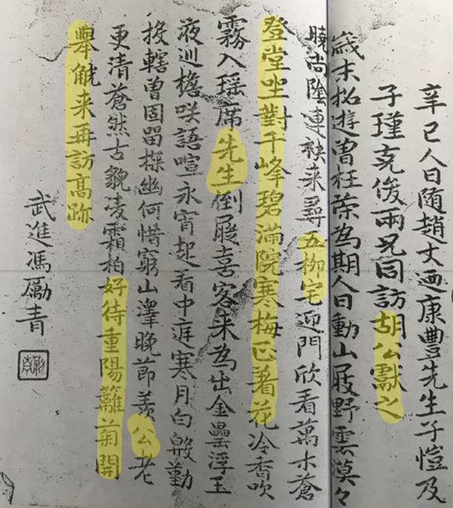

原书编排
封面 辛己冬 赵恺题

序 辛己六月十九日 南通王焕镳

时任浙江大学国文系教授王焕镳（字驾吾）虽“病不能行，为怅然久之，既而赵翁迺康之记，丰子恺之画，名流诸子之诗与词，得于展谒”，还是欣然命笔，为之作序
鄭莫黎三先生遺像、小傳
鄭子尹先生遺像 子愷畫
鄭徵君小傳 遵義趙愷譔
莫郘亭先生遺像 子愷畫

莫徵君小傳 遵義趙愷譔
黎蓴齋先生遺像 子愷畫

黎欽使小傳 遵義趙愷譔

谒鄭莫黎三先生墓、访故居
辛己人日往谒鄭黎莫三先生墓記 遵義趙愷迺康記
 


鄭墓原状想象图，鄭墓 子愷畫
旅遵謁鄭莫黎三先生墓書懷五十韻 盧江益美濯清

子午山谒鄭子尹先生墓 武进冯励青

子午山十二韵 乐清李瑜子瑾
偕子瑾勵青兩兄奉陪迺康獻之子愷諸先生恭謁鄭徵君子尹墓 長沙羅展巴山

望山堂感懷 遵義牟琳貢三
過子午山謁鄭徵君墓 古播喻聖域稿

莫墓 子愷畫
謁莫子偲先生墓 武進馮勵青

青田山放歌 樂清李瑜[子瑾]

黎墓 子愷畫
夜宿黎星使純齋故宅 武進馮勵青

歸飲沙灘黎氏 樂清李瑜[子瑾]

謁黎欽使墓 古棠徐森芝孫

禹門寺
坐久意未厭 子愷畫

禹門寺 樂清李瑜[子瑾]

禹門寺 武進馮勵青

偕濯清木初兩公重登禹門寺 ... 樂清李瑜[子瑾]

禹門寺 長沙羅展巴山

清乘橋
清乘橋 子愷畫

清乘橋 牂北生趙愷

初過清乘橋 樂清李瑜[子瑾]

访胡獻之山莊
一灣綠水山百轉 門前一笑師象迎 子愷畫

题跋是“卅年同游子午山，访胡献之老丈之山庄，即图其景，借迺康老丈诗句为题，子愷”。画面是小溪前的山庄，门扉洞开
人日陪豐子愷李子瑾馮勵青羅巴山諸君子訪胡獻之君同謁鄭莫黎三先生墓既歸作此酬之 迺康

辛己人日隨趙丈迺康豐先生子愷及子瑾克俊兩兄同訪胡公獻之 鄭黎莫三先生墓 武進馮勵青
山莊即事 遵義胡忠相獻之

访節孝寺
節孝寺 子愷畫

節孝寺觀豐子愷君畫佛 迺康稿
節孝寺觀豐子愷君畫佛 樂清李瑜[子瑾]
 “徐步向岩阿，澄霄落碧波。松嫌依槛少，竹爱入门多。静日无烽起，闲云有杖过。何劳尘外访，画里见维摩。
“徐步向岩阿，澄霄落碧波。松嫌依槛少，竹爱入门多。静日无烽起，闲云有杖过。何劳尘外访，画里见维摩。
柳待春回、初柳、紅梅
柳待春回綠未生 子愷畫

柳待春回綠未生 樂清李瑜[子瑾]
 长题目《辛巳人日，胡公献之招同迺康、子恺两先生，励青、巴山诸兄往游子午山，夜宿其家，即席赋此。子恺先生因以余句作迎春图》的七律诗
长题目《辛巳人日，胡公献之招同迺康、子恺两先生，励青、巴山诸兄往游子午山，夜宿其家，即席赋此。子恺先生因以余句作迎春图》的七律诗
这个长题可以看作为诗前的一段小序，交代了此行、此诗和此画的成因。
诗曰：“出郭偏劳拄杖迎，车鸣唤起为公行。梅随客至香初透，柳待春回绿未生。破野光浮知月上，连山影落见云横。重寻已许烽销后，绕座应先奉玉觥。”
首联写东道主胡献之出郭拄杖相迎，颔联写早春梅花初放柳树尚未发叶的景象，颈联写黄昏月上影落云横的景色，尾联写相约抗战胜利后重游，举杯畅饮酬谢东道主。
丰子恺取了宜于入画的“柳待春回绿未生”一句，作成漫画一幅。
阕词《浣溪沙·初柳》 樂清李瑜[子瑾]
阕词《浣溪沙·初柳》：树底烟消绿渐垂，横塘风动破涟漪，轻丝飞恨薄帘帏。曲榭莺慵声未透，遥堤燕缓影空迷，凝情谁为绾沈晖。
教人知道是春来 子愷畫

暗香胡氏紅梅 樂清李瑜[子瑾]
跋子午山紀遊冊後 樂清李瑜瑾跋